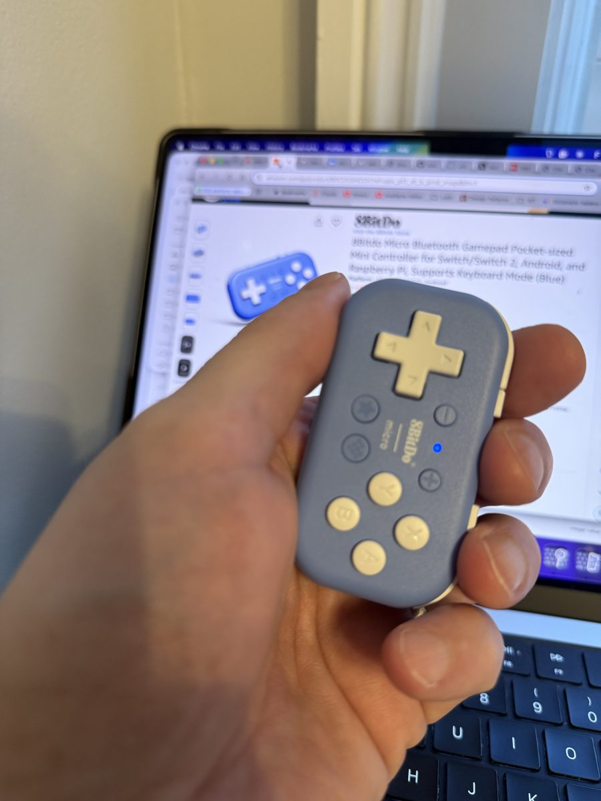

Claude Code Without the Keyboard: Voice and a Game Controller
A Claude Code session needs two kinds of input from you. You describe what you want, and you answer Claude's questions with yes, no, or one of a few choices. Speech handles the first. A handful of buttons handles the second.
This post sets that up on a Mac with an 8BitDo Micro controller, FluidVoice for dictation, and Karabiner-Elements to remap only the controller. In my first session I installed and configured a Claude Code plugin without touching the keyboard. Slash commands were the one thing speech could not do, and a button for / fixed that.
Where this comes from
Not long ago, writing code without opening an editor was new. With agents like Claude Code, you describe the change and approve what the agent does. Now that work doesn't need the keyboard either. "Writing code" is a loose term here, since Claude writes it and I steer.
In a post from April 13, 2026, Robert Kovacs described doing this daily for several weeks with the same controller and Wispr Flow. He found that talking makes him state the intent, constraints and edge cases up front, so Claude's first attempt lands closer. He also found that speech cannot approve anything. Saying "yes" types the word "yes" into the chat box, so approvals need a real key.
My setup differs in three places. FluidVoice transcribes on the Mac instead of in the cloud. I remapped the controller on the Mac with Karabiner, because 8BitDo's remapping app has no macOS version. And I kept a log of every time I had to reach for the keyboard, because that count is the honest measure of whether the setup works.
What you need
- An 8BitDo Micro. A Bluetooth controller about the size of a keychain, sold for page turning and Anki. It has a keyboard mode, so the Mac sees it as a keyboard. I bought mine on Amazon.
- FluidVoice. A free, open-source dictation app for macOS. You hold a key, talk, and release, and it types the text wherever the cursor is. It runs speech models on your Mac unless you turn on a cloud provider.
- Karabiner-Elements. A free, open-source key remapper for macOS. It can apply a rule to one device only, which is what makes this work.
- Claude Code in a terminal.

Find out what the controller sends
- Slide the Micro's mode switch to K.
- Hold the pair button on the top edge for about 3 seconds, until the light blinks fast.
- On the Mac, open System Settings, then Bluetooth, and connect to "8BitDo Micro gamepad".
- Open TextEdit and press each button in a known order.
In keyboard mode, every button types a letter. Mine typed these:
| Button | Sends |
|---|---|
| A, B, X, Y | g, j, h, i |
| D-pad up, down, left, right | c, d, e, f |
| L, R | l, r |
| Plus, minus | o, n |
| The two remaining buttons | k, m |
Claude Code ignores all of these. It listens for Enter, Esc, the arrow keys and Shift+Tab, so the controller needs remapping.
Remap only the controller
Install Karabiner with Homebrew. The installer adds a keyboard driver, so it asks for your password.
brew install --cask karabiner-elementsOpen Karabiner-Elements and follow its prompts. In System Settings, under Privacy & Security, turn on Karabiner-Core-Service in both Input Monitoring and Accessibility. Karabiner sees every key you type once you grant these, which is how any remapper works. Read its source if that matters to you.
The rule below goes in ~/.config/karabiner/karabiner.json, under profiles[0].complex_modifications.rules. Each line turns one letter into one key. The device_if condition limits the rule to the Micro by its vendor and product IDs, so your real keyboard still types g. Run system_profiler SPBluetoothDataType to confirm the IDs for your unit. Mine reported vendor 0x2DC8 (11720) and product 0x9021 (36897).
{
"description": "8BitDo Micro: A=Enter, B=Esc, D-pad=arrows, L=FluidVoice, R=Shift+Tab, X=/",
"manipulators": [
{ "from": "g", "to": "return_or_enter" },
{ "from": "j", "to": "escape" },
{ "from": "c", "to": "up_arrow" },
{ "from": "d", "to": "down_arrow" },
{ "from": "e", "to": "left_arrow" },
{ "from": "f", "to": "right_arrow" },
{ "from": "l", "to": "right_option" },
{ "from": "r", "to": "tab", "modifiers": ["left_shift"] },
{ "from": "h", "to": "slash" }
]
}That is shorthand. Karabiner wants each line written out in full, with the device condition on every one. Here is the first line in Karabiner's format. The others follow the same shape.
{
"type": "basic",
"from": { "key_code": "g", "modifiers": { "optional": ["any"] } },
"to": [{ "key_code": "return_or_enter" }],
"conditions": [{
"type": "device_if",
"identifiers": [{ "vendor_id": 11720, "product_id": 36897 }]
}]
}Karabiner reloads the file when it changes. Press A in TextEdit to check. It should start a new line instead of typing g.
The button map
| Button | Key | In Claude Code |
|---|---|---|
| A | Enter | Accept, submit, or pick the highlighted option |
| B | Esc | Reject, or interrupt Claude while it works |
| D-pad | Arrow keys | Move between options in a question or a permission prompt |
| L, held | Right Option | FluidVoice listens while you hold it |
| R | Shift+Tab | Switch Claude Code's permission mode |
| X | / | Open the command menu |
FluidVoice's hotkey was already right Option, so the L button only had to send that key. Kovacs used a key combination for Wispr Flow because Wispr's default key, fn, could not be assigned to a controller button in 8BitDo's app. Karabiner sends a plain right Option, so no combination was needed.
I left Y, plus, minus and the other two buttons alone. They still type letters, so a stray press puts a letter in your prompt. Map them to vk_none in the same rule if that happens to you.
What went wrong during setup
- 8BitDo's own app. 8BitDo Ultimate Software V2 has no macOS version, and the iPhone version had a one-star rating when I looked. Kovacs remapped through the iPhone app, and it worked for him. I used Karabiner instead.
- Permissions that looked granted. After I approved Karabiner's prompts, the controller still typed letters. Karabiner's log said
device_grabber is not started because the required permissions are not granted. Its setup window had stopped at the Accessibility step. Granting that fixed it. - Quitting Karabiner stops the remap silently. I quit it to restart it after granting permissions. Until it was open again, the buttons typed letters with no warning.
Two of these share a cause. Nothing on the screen told me the setup was not working. The buttons kept typing letters, which looks the same as a rule with a typo. The only reliable signal was Karabiner's log at /var/log/karabiner/core_service.log, which says when it has taken over the controller.
The first session
Once the remap worked, I used speech and the controller for the rest of the session. In that time I installed a Claude Code plugin, pstack, and ran its setup. The setup asked four multiple-choice questions, and I answered each with the D-pad and A.
| Task | Keyboard presses | Why |
|---|---|---|
| Install Karabiner | 1 | The installer asks for the Mac password, before the controller works |
| Install the pstack plugin | 0 | |
| Run a slash command by voice | None, but it failed | FluidVoice typed "Slash pstack setup p stack" as plain words |
| Run a slash command with the X button | 0 | |
| Configure pstack (four questions) | 0 |
Slash commands are the gap. Dictation writes what it hears as words, and Claude Code only treats text as a command when it starts with a typed /. My first workaround was to ask in plain words, "run the pstack setup", and let Claude follow the plugin's steps. The fix was to map X to /. Pressing X opens Claude Code's command menu. Dictating one word, such as "setup", narrows the list. The D-pad picks the command and A runs it. Dictation only has to get one ordinary word right, and choosing from a short list is what the controller does well.
This is one session, so it shows the setup works. It says nothing yet about whether I work faster or better this way.
Two things the buttons do not tell you
Don Norman's The Design of Everyday Things asks two questions of any control. Can you tell what it does by looking at it? Can you tell whether it worked?
The controller fails the first. The buttons say A, B, X and Y, not Accept and Reject, so the mapping lives in your memory or on a table beside you. A label on screen that names each button's current action would fix this, and Claude Code's status line could show one. The setup failed the second question, as described above, because a broken remap and a working one with a typo look the same.
Does a one-press yes change what you approve?
With this setup, approving a change costs one press of the thumb. Reading what you approve costs the same as it did before. I expect that gap to pull toward approving without reading, and Kovacs's post does not look at it.
This could be measured instead of guessed. Use a review task where the right answers are known in advance, and alternate batches between the keyboard and the controller. Discard the first batches with each input, so learning the controller does not count against it. Then compare how many wrong answers got approved with each.
References
- Coding hands-free with Claude Code and Wispr Flow, Robert Kovacs, April 2026
- FluidVoice, open-source dictation for macOS (GPLv3)
- Karabiner-Elements, key remapper for macOS
- 8BitDo Micro
- pstack, the plugin installed in the first session
- Don Norman, The Design of Everyday Things, revised edition, Basic Books, 2013